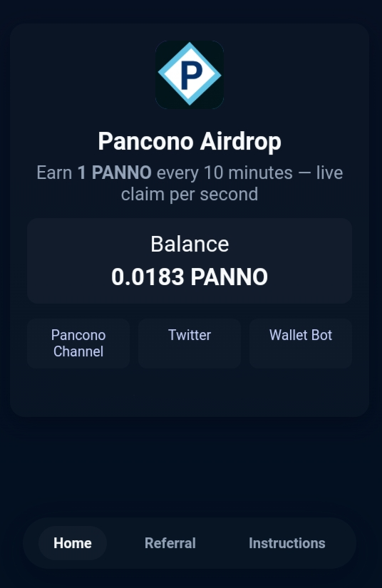

Pancono Mining & Airdrop
Introducing a new peer to peer blockchain Pancono non-custodial wallet that works same like the Bitcoin Core wallet.

Mine Pancono Coin (PANNO) & Points
Click above 'Download Core Wallet', at next page scroll down at bottom and find 'Pancono.Core.Wallet.zip and Core.Wallet.zip' files, download it to start mining coins and points( Download only for Windows). When you mine coins means you are mining Pancono coins of Pancono Project. When they mine points means you are mining our other multiple partners coins of their projects and will receive multiple diffrent coins from their projects. ( the points will get converted into coins during mainnet launch).
Important Note: Peer connections in your downloaded core wallet are currently disabled, which means sending or receiving coins is not yet supported. To unlock peer connectivity, you must invite 5 friends through Pancono’s Telegram bot.
Once your invitations are completed, core wallet will become eligible for full peer connections and will automatically connect to the mainnet blockchain during launch. After the connection is live, you will be able to send and receive coins, trade, buy, and sell with full wallet functionality.
Note that you must invite friends now before mainnet launch period or all mined coins will become useless.So get your invite friends link from this Pancono's Airdrop Telegram bot and start inving friends.
Airdrop: Claim Pancono (For Telegram Users)
✅ App Status
The Claiming Terminal App will start here and users will be able to mine as show at video. Watch below video on how anyone can mine and claim unlimited Pancono coins.
Only users who invite five friends will see the Claiming Terminal App unlocked and open on their mobile screen — others will not see or have access. So make sure to invite five friends. When the app goes live, you’ll be able to open the Claiming Terminal, earn Pancono coins, and become one of the early adopters.
Tockennomics & Migration
Mainnet is ready to launch very soon after the mining phase is over. Total suppyly is fixed at 30 million Pancono Coins.
Mainnet launch, airdrop distribution, final tokenomics, and future announcements will be posted here and across all official platforms.
Stay active daily. Mine coins & Points, invite friends to boost your airdrop rewards.